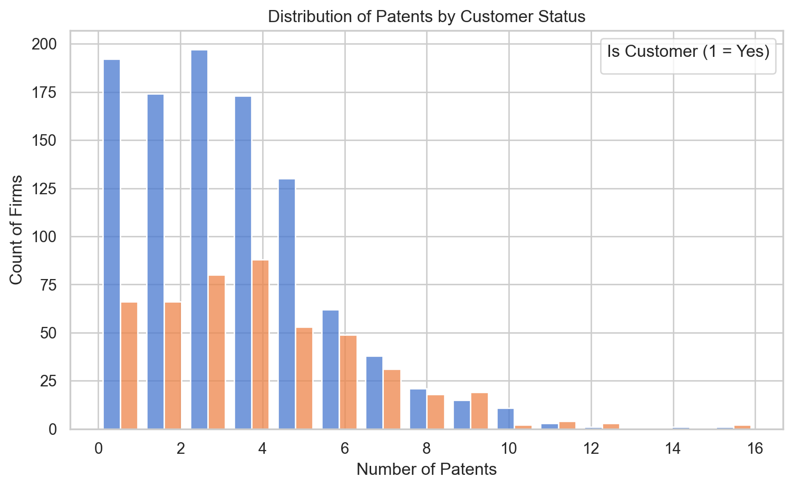
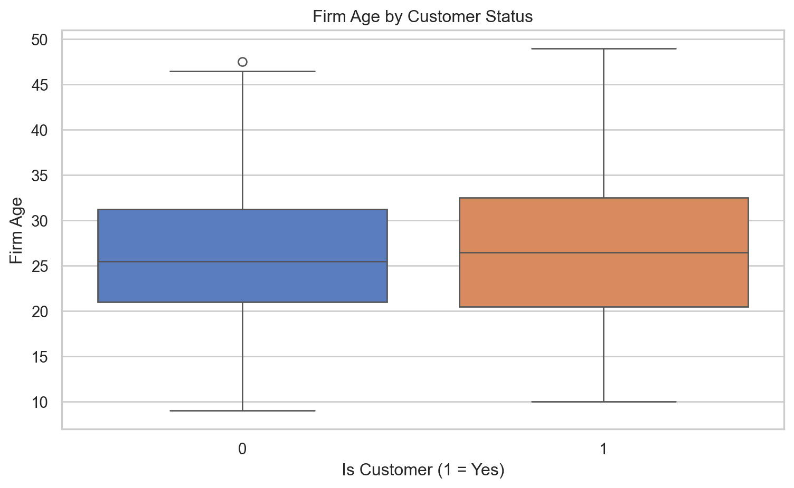
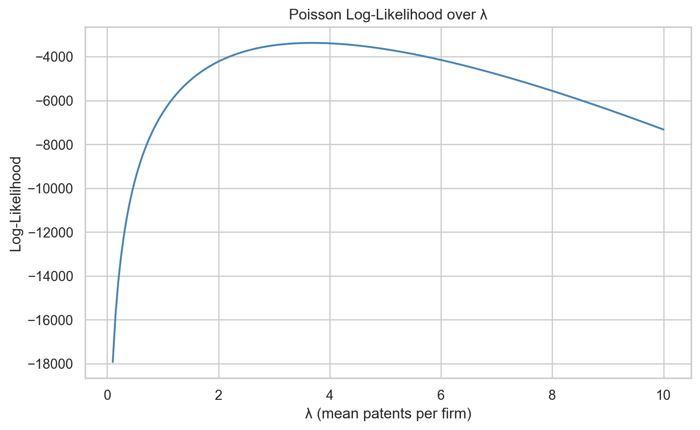

| patents | region | age | iscustomer | |
|---|---|---|---|---|
| 0 | 0 | Midwest | 32.5 | 0 |
| 1 | 3 | Southwest | 37.5 | 0 |
| 2 | 4 | Northwest | 27.0 | 1 |
| 3 | 3 | Northeast | 24.5 | 0 |
| 4 | 3 | Southwest | 37.0 | 0 |
Poisson Regression Examples
Blueprinty Case Study
Introduction
Blueprinty is a small firm that makes software for developing blueprints specifically for submitting patent applications to the US patent office. Their marketing team would like to make the claim that patent applicants using Blueprinty’s software are more successful in getting their patent applications approved. Ideal data to study such an effect might include the success rate of patent applications before using Blueprinty’s software and after using it. Unfortunately, such data is not available.
However, Blueprinty has collected data on 1,500 mature (non-startup) engineering firms. The data include each firm’s number of patents awarded over the last 5 years, regional location, age since incorporation, and whether or not the firm uses Blueprinty’s software. The marketing team would like to use this data to make the claim that firms using Blueprinty’s software are more successful in getting their patent applications approved.
Data
We begin by loading the dataset containing information on engineering firms and their patenting activity. This includes whether or not a firm uses Blueprinty’s software.
The first few rows of the dataset show each firm’s number of patents, regional location, age, and whether they are a Blueprinty customer. We see a mix of customer (iscustomer = 1) and non-customer firms, with patent counts ranging from 0 to 4. Firm ages vary from around 24 to 38 years, and regions span categories like Midwest and Southwest. These observations suggest the data is well-structured for count-based modeling and that customer status, region, and firm age may all influence patenting outcomes.
todo: Compare histograms and means of number of patents by customer status. What do you observe? ## Patent Counts by Customer Status
To understand whether firms using Blueprinty’s software tend to receive more patents, we examine the distribution of patent counts by customer status. The plot below shows histograms for customers and non-customers side by side, and the table reports the average number of patents for each group.

The histogram above shows the distribution of patent counts for firms that do and do not use Blueprinty’s software. While the majority of both groups have relatively few patents, we observe that Blueprinty customers are more likely to appear in higher patent count categories (e.g., 5 or more patents). In contrast, non-customers dominate the lower count bins (0–3 patents). This suggests that firms using Blueprinty’s software may be associated with higher patenting activity, though further analysis is needed to account for other factors like firm age and region.
| iscustomer | Average Number of Patents | |
|---|---|---|
| 0 | 0 | 3.473013 |
| 1 | 1 | 4.133056 |
On average, Blueprinty customers have approximately 0.66 more patents than non-customers. While this difference is modest, it suggests a positive association between using the software and patenting activity. This pattern aligns with what we observed in the histogram and sets the stage for more rigorous modeling using Poisson regression.
Blueprinty customers are not selected at random. It may be important to account for systematic differences in the age and regional location of customers vs non-customers.
Differences in Firm Characteristics by Customer Status
Blueprinty customers are not selected at random. It may be important to account for systematic differences in characteristics like region and firm age between customers and non-customers.
We begin by examining whether the age distribution differs by customer status, and then compare regional distributions.
/var/folders/n6/y_4fsn553lq6_fzmfb11cjth0000gn/T/ipykernel_61357/1514657809.py:6: FutureWarning:
Passing `palette` without assigning `hue` is deprecated and will be removed in v0.14.0. Assign the `x` variable to `hue` and set `legend=False` for the same effect.

The boxplot reveals that Blueprinty customers tend to be slightly younger than non-customer firms. While both groups share similar age ranges and interquartile spreads, the median firm age is lower among customers. This suggests that firm age may influence both software adoption and patenting behavior. As a result, it is important to control for age in subsequent modeling to ensure we isolate the effect of using Blueprinty’s software from differences attributable to firm maturity.
The table shows the proportion of Blueprinty customers and non-customers across different regions. Most regions — including the Midwest, Northwest, South, and Southwest — have a relatively low customer adoption rate (about 16–18%). However, the Northeast stands out: a majority of firms in this region (55%) are Blueprinty customers.
| iscustomer | 0 | 1 |
|---|---|---|
| region | ||
| Midwest | 0.83 | 0.17 |
| Northeast | 0.45 | 0.55 |
| Northwest | 0.84 | 0.16 |
| South | 0.82 | 0.18 |
| Southwest | 0.82 | 0.18 |
This regional disparity suggests that firms in the Northeast are significantly more likely to use Blueprinty’s software. As a result, region may confound the relationship between software usage and patent success, and it should be accounted for in any regression model to avoid biased estimates.
Estimation of Simple Poisson Model
Since our outcome variable of interest can only be small integer values per a set unit of time, we can use a Poisson density to model the number of patents awarded to each engineering firm over the last 5 years. We start by estimating a simple Poisson model via Maximum Likelihood.
todo: Write down mathematically the likelihood for \(Y \sim \text{Poisson}(\lambda)\). Note that \(f(Y|\lambda) = e^{-\lambda}\lambda^Y/Y!\). ### Poisson Likelihood Function
Let ( Y_i (_i) ), where ( _i ) is the expected number of patents for firm ( i ).
The probability mass function for a Poisson-distributed outcome is:
[ f(Y_i | _i) = ]
Assuming observations are independent across ( n ) firms, the likelihood function is:
[ () = _{i=1}^n ]
Taking the log gives the log-likelihood:
[ () = _{i=1}^n ( -_i + Y_i _i - Y_i! ) ]
In Poisson regression, we model ( _i = (X_i ) ), which ensures ( _i > 0 ).
Coding the Log-Likelihood Function
We define the log-likelihood function for a Poisson model, where the outcome variable ( Y ) follows a Poisson distribution with mean ( ). This function will be useful for implementing MLE manually.
import numpy as np
def poisson_loglikelihood(lam, y):
"""
Compute the log-likelihood for Poisson-distributed outcomes.
Parameters:
- lam: array-like of expected values (lambda_i)
- y: array-like of observed counts (Y_i)
Returns:
- total log-likelihood (float)
"""
lam = np.asarray(lam)
y = np.asarray(y)
loglik = np.sum(-lam + y * np.log(lam) - np.log(np.math.factorial(y)))
return logliktodo: Use your function to plot lambda on the horizontal axis and the likelihood (or log-likelihood) on the vertical axis for a range of lambdas (use the observed number of patents as the input for Y).
Log-Likelihood over a Range of λ Values
We use our Poisson log-likelihood function to evaluate how the likelihood changes over different values of λ. This helps us visualize the value of λ that best fits the observed number of patents.

The plot above shows how the Poisson log-likelihood varies with different values of λ, which represents the expected number of patents per firm. The curve peaks around λ = 4, indicating that this value maximizes the likelihood of observing the data under a Poisson model. In other words, the value λ ≈ 4 is the maximum likelihood estimate (MLE) — it best fits the distribution of observed patent counts. Values of λ much smaller or larger result in significantly lower likelihoods, confirming that λ ≈ 4 provides the most plausible explanation for the data.
todo: If you’re feeling mathematical, take the first derivative of your likelihood or log-likelihood, set it equal to zero and solve for lambda. You will find lambda_mle is Ybar, which “feels right” because the mean of a Poisson distribution is lambda. ### Deriving the MLE for λ in the Poisson Model
Let ( Y_1, Y_2, , Y_n ) be independent observations from a Poisson distribution with parameter ( ). The log-likelihood function is:
[ () = _{i=1}^n ( -+ Y_i - Y_i! ) ]
To find the maximum likelihood estimate (MLE), take the derivative with respect to ( ), set it to zero, and solve:
[ = _{i=1}^n ( -1 + ) = 0 ]
[ -n + _{i=1}^n Y_i = 0 ]
[ {i=1}^n Y_i = n = {i=1}^n Y_i = {Y} ]
So, the MLE of ( ) is simply the sample mean of the observed data:
[ _{} = {Y} ]
This result makes intuitive sense because the Poisson distribution has a single parameter, ( ), which represents both its mean and variance.
todo: Find the MLE by optimizing your likelihood function with optim() in R or sp.optimize() in Python.
Finding the MLE of λ Using Optimization
To confirm our visual result and mathematical derivation, we numerically estimate the MLE of ( ) by maximizing the Poisson log-likelihood. Since most optimizers minimize functions, we minimize the negative log-likelihood using scipy.optimize.
from scipy.optimize import minimize_scalar
# Define the negative log-likelihood function
def neg_loglik(lambda_val):
return -poisson_loglikelihood(lambda_val, y_observed)
# Optimize using bounded scalar minimization
result = minimize_scalar(neg_loglik, bounds=(0.1, 10), method='bounded')
# Extract the MLE
lambda_mle = result.x
lambda_mle3.6846662261327716Estimation of Poisson Regression Model
Next, we extend our simple Poisson model to a Poisson Regression Model such that \(Y_i = \text{Poisson}(\lambda_i)\) where \(\lambda_i = \exp(X_i'\beta)\). The interpretation is that the success rate of patent awards is not constant across all firms (\(\lambda\)) but rather is a function of firm characteristics \(X_i\). Specifically, we will use the covariates age, age squared, region, and whether the firm is a customer of Blueprinty.
Defining the Poisson Regression Log-Likelihood
In the Poisson regression model, each firm ( i ) has a rate ( _i = (X_i^) ), where ( X_i ) includes the firm’s age, age squared, region dummies, and customer status. We now define the log-likelihood function in terms of ( ) and ( X ).
import numpy as np
from scipy.special import gammaln
def poisson_regression_loglikelihood(beta, y, X):
"""
Compute the Poisson regression log-likelihood.
Parameters:
- beta: array-like, shape (k,)
- y: array-like, shape (n,)
- X: array-like, shape (n, k)
Returns:
- log-likelihood (float)
"""
beta = np.asarray(beta)
y = np.asarray(y)
X = np.asarray(X)
lambda_i = np.exp(X @ beta) # inverse link function
loglik = np.sum(-lambda_i + y * np.log(lambda_i) - gammaln(y + 1))
return loglikEstimating a Poisson Regression Model with statsmodels
We now estimate the Poisson regression using statsmodels, which provides built-in handling of the link function, robust inference, and well-formatted output.
import statsmodels.api as sm
import pandas as pd
# Create age^2 and region dummies
df["age_squared"] = df["age"] ** 2
region_dummies = pd.get_dummies(df["region"], drop_first=True)
# Combine predictors
X = pd.concat([
df[["age", "age_squared", "iscustomer"]],
region_dummies
], axis=1)
X = sm.add_constant(X) # add intercept
# Convert both X and y to float arrays (guaranteed numeric)
X = X.astype(float)
y = df["patents"].astype(float)
# Fit Poisson regression
poisson_model = sm.GLM(y, X, family=sm.families.Poisson())
poisson_results = poisson_model.fit()
# Show model summary
poisson_results.summary()| Dep. Variable: | patents | No. Observations: | 1500 |
| Model: | GLM | Df Residuals: | 1492 |
| Model Family: | Poisson | Df Model: | 7 |
| Link Function: | Log | Scale: | 1.0000 |
| Method: | IRLS | Log-Likelihood: | -3258.1 |
| Date: | Wed, 07 May 2025 | Deviance: | 2143.3 |
| Time: | 21:14:25 | Pearson chi2: | 2.07e+03 |
| No. Iterations: | 5 | Pseudo R-squ. (CS): | 0.1360 |
| Covariance Type: | nonrobust |
| coef | std err | z | P>|z| | [0.025 | 0.975] | |
| const | -0.5089 | 0.183 | -2.778 | 0.005 | -0.868 | -0.150 |
| age | 0.1486 | 0.014 | 10.716 | 0.000 | 0.121 | 0.176 |
| age_squared | -0.0030 | 0.000 | -11.513 | 0.000 | -0.003 | -0.002 |
| iscustomer | 0.2076 | 0.031 | 6.719 | 0.000 | 0.147 | 0.268 |
| Northeast | 0.0292 | 0.044 | 0.669 | 0.504 | -0.056 | 0.115 |
| Northwest | -0.0176 | 0.054 | -0.327 | 0.744 | -0.123 | 0.088 |
| South | 0.0566 | 0.053 | 1.074 | 0.283 | -0.047 | 0.160 |
| Southwest | 0.0506 | 0.047 | 1.072 | 0.284 | -0.042 | 0.143 |
Verifying Results Using statsmodels.GLM
To verify our custom likelihood and optimization results, we fit the same Poisson regression model using the built-in statsmodels.GLM() function with the Poisson family. This method handles link functions and inference automatically, providing coefficient estimates and standard errors.
import statsmodels.api as sm
import pandas as pd
# Create age squared and dummy variables
df["age_squared"] = df["age"] ** 2
region_dummies = pd.get_dummies(df["region"], drop_first=True)
# Build the design matrix
X = pd.concat([
df[["age", "age_squared", "iscustomer"]],
region_dummies
], axis=1)
X = sm.add_constant(X) # Add intercept
# Convert to float (ensures all numeric types)
X = X.astype(float)
y = df["patents"].astype(float)
# Fit Poisson model
poisson_model = sm.GLM(y, X, family=sm.families.Poisson())
poisson_results = poisson_model.fit()
# Display the summary
poisson_results.summary()| Dep. Variable: | patents | No. Observations: | 1500 |
| Model: | GLM | Df Residuals: | 1492 |
| Model Family: | Poisson | Df Model: | 7 |
| Link Function: | Log | Scale: | 1.0000 |
| Method: | IRLS | Log-Likelihood: | -3258.1 |
| Date: | Wed, 07 May 2025 | Deviance: | 2143.3 |
| Time: | 21:14:25 | Pearson chi2: | 2.07e+03 |
| No. Iterations: | 5 | Pseudo R-squ. (CS): | 0.1360 |
| Covariance Type: | nonrobust |
| coef | std err | z | P>|z| | [0.025 | 0.975] | |
| const | -0.5089 | 0.183 | -2.778 | 0.005 | -0.868 | -0.150 |
| age | 0.1486 | 0.014 | 10.716 | 0.000 | 0.121 | 0.176 |
| age_squared | -0.0030 | 0.000 | -11.513 | 0.000 | -0.003 | -0.002 |
| iscustomer | 0.2076 | 0.031 | 6.719 | 0.000 | 0.147 | 0.268 |
| Northeast | 0.0292 | 0.044 | 0.669 | 0.504 | -0.056 | 0.115 |
| Northwest | -0.0176 | 0.054 | -0.327 | 0.744 | -0.123 | 0.088 |
| South | 0.0566 | 0.053 | 1.074 | 0.283 | -0.047 | 0.160 |
| Southwest | 0.0506 | 0.047 | 1.072 | 0.284 | -0.042 | 0.143 |
he regression results provide strong evidence that using Blueprinty’s software is associated with an increase in the expected number of patents. The coefficient on iscustomer is 0.2076 and is statistically significant (p < 0.001), implying that being a customer increases the log expected patent count. Exponentiating this coefficient (i.e., 𝑒 0.2076 ≈ 1.23 e 0.2076 ≈1.23) suggests that, all else equal, Blueprinty customers have about 23% more patents than non-customers.
Firm age is also significant: the positive coefficient on age and negative coefficient on age_squared indicate a concave (inverted-U) relationship between age and patent output — suggesting patent productivity increases with age, but at a decreasing rate.
Regional variables are not statistically significant, indicating no clear evidence that location alone explains differences in patenting after controlling for other factors.
Overall, the model supports Blueprinty’s claim that their customers are more successful in patenting, even when accounting for differences in firm age and location.
todo: What do you conclude about the effect of Blueprinty’s software on patent success? Because the beta coefficients are not directly interpretable, it may help to create two fake datasets: X_0 and X_1 where X_0 is the X data but with iscustomer=0 for every observation and X_1 is the X data but with iscustomer=1 for every observation. Then, use X_0 and your fitted model to get the vector of predicted number of patents (y_pred_0) for every firm in the dataset, and use X_1 to get Y_pred_1 for every firm. Then subtract y_pred_1 minus y_pred_0 and take the average of that vector of differences.
Simulated Impact of Blueprinty’s Software
We now simulate the impact of Blueprinty by predicting patent counts under two scenarios: (1) no firms use the software, and (2) all firms use the software. We then compute the average difference in predicted patents across all firms.
0.792768071045253To assess the practical impact of Blueprinty’s software on patenting outcomes, we simulated two scenarios using our fitted Poisson regression model. In the first scenario, we predicted the number of patents for each firm assuming none used Blueprinty. In the second, we predicted patent counts assuming all firms were customers. The average difference between these two sets of predictions was approximately 0.79 patents per firm, indicating that Blueprinty’s software is associated with a meaningful increase in patenting success. This approach translates the regression results into an interpretable quantity and confirms that, on average, firms that use Blueprinty are expected to secure nearly one additional patent over five years compared to similar non-customers.
AirBnB Case Study
Introduction
AirBnB is a popular platform for booking short-term rentals. In March 2017, students Annika Awad, Evan Lebo, and Anna Linden scraped of 40,000 Airbnb listings from New York City. The data include the following variables:
todo: Assume the number of reviews is a good proxy for the number of bookings. Perform some exploratory data analysis to get a feel for the data, handle or drop observations with missing values on relevant variables, build one or more models (e.g., a poisson regression model for the number of bookings as proxied by the number of reviews), and interpret model coefficients to describe variation in the number of reviews as a function of the variables provided.
Modeling Airbnb Reviews
We assume that the number of reviews is a good proxy for the number of bookings a listing receives. In this section, we conduct exploratory data analysis, prepare the dataset, fit a Poisson regression model, and interpret the model results.
1. Data Cleaning and Exploration
We begin by selecting relevant variables for predicting the number of reviews. We drop any rows with missing values to ensure clean model fitting.
import pandas as pd
# Load the Airbnb dataset (adjust the path as needed)
df = pd.read_csv("/Users/hanhuazhu/Desktop/mywebsite/blog/project2/airbnb.csv")
# Preview column names to confirm structure
df.columnsIndex(['Unnamed: 0', 'id', 'days', 'last_scraped', 'host_since', 'room_type',
'bathrooms', 'bedrooms', 'price', 'number_of_reviews',
'review_scores_cleanliness', 'review_scores_location',
'review_scores_value', 'instant_bookable'],
dtype='object')# Select relevant variables
airbnb = df[[
"number_of_reviews", "room_type", "bathrooms", "bedrooms", "price",
"review_scores_cleanliness", "review_scores_location",
"review_scores_value", "instant_bookable"
]]
# Drop missing values
airbnb = airbnb.dropna()
# Display a summary of the cleaned data
airbnb.describe(include="all")| number_of_reviews | room_type | bathrooms | bedrooms | price | review_scores_cleanliness | review_scores_location | review_scores_value | instant_bookable | |
|---|---|---|---|---|---|---|---|---|---|
| count | 30160.000000 | 30160 | 30160.000000 | 30160.000000 | 30160.000000 | 30160.000000 | 30160.000000 | 30160.000000 | 30160 |
| unique | NaN | 3 | NaN | NaN | NaN | NaN | NaN | NaN | 2 |
| top | NaN | Entire home/apt | NaN | NaN | NaN | NaN | NaN | NaN | f |
| freq | NaN | 15543 | NaN | NaN | NaN | NaN | NaN | NaN | 24243 |
| mean | 21.170889 | NaN | 1.122132 | 1.151459 | 140.206863 | 9.201724 | 9.415351 | 9.333952 | NaN |
| std | 32.007541 | NaN | 0.384916 | 0.699010 | 188.392314 | 1.114261 | 0.843185 | 0.900472 | NaN |
| min | 1.000000 | NaN | 0.000000 | 0.000000 | 10.000000 | 2.000000 | 2.000000 | 2.000000 | NaN |
| 25% | 3.000000 | NaN | 1.000000 | 1.000000 | 70.000000 | 9.000000 | 9.000000 | 9.000000 | NaN |
| 50% | 8.000000 | NaN | 1.000000 | 1.000000 | 103.000000 | 10.000000 | 10.000000 | 10.000000 | NaN |
| 75% | 26.000000 | NaN | 1.000000 | 1.000000 | 169.000000 | 10.000000 | 10.000000 | 10.000000 | NaN |
| max | 421.000000 | NaN | 6.000000 | 10.000000 | 10000.000000 | 10.000000 | 10.000000 | 10.000000 | NaN |
2. Poisson Regression Model
We use Poisson regression to model the number of reviews as a function of listing features, assuming that reviews follow a Poisson distribution. We include dummy variables for categorical features and a constant term.
import statsmodels.api as sm
import pandas as pd
# Create dummy variables
dummies = pd.get_dummies(airbnb[["room_type", "instant_bookable"]], drop_first=True)
# Build design matrix
X_airbnb = pd.concat([
airbnb[["bathrooms", "bedrooms", "price",
"review_scores_cleanliness",
"review_scores_location",
"review_scores_value"]],
dummies
], axis=1)
X_airbnb = sm.add_constant(X_airbnb)
# Ensure all data are numeric
X_airbnb = X_airbnb.astype(float)
y_airbnb = airbnb["number_of_reviews"].astype(float)
# Fit Poisson regression
model_airbnb = sm.GLM(y_airbnb, X_airbnb, family=sm.families.Poisson()).fit()
# Display model summary
model_airbnb.summary()| Dep. Variable: | number_of_reviews | No. Observations: | 30160 |
| Model: | GLM | Df Residuals: | 30150 |
| Model Family: | Poisson | Df Model: | 9 |
| Link Function: | Log | Scale: | 1.0000 |
| Method: | IRLS | Log-Likelihood: | -5.2900e+05 |
| Date: | Wed, 07 May 2025 | Deviance: | 9.3653e+05 |
| Time: | 21:14:26 | Pearson chi2: | 1.41e+06 |
| No. Iterations: | 6 | Pseudo R-squ. (CS): | 0.5649 |
| Covariance Type: | nonrobust |
| coef | std err | z | P>|z| | [0.025 | 0.975] | |
| const | 3.5725 | 0.016 | 223.215 | 0.000 | 3.541 | 3.604 |
| bathrooms | -0.1240 | 0.004 | -33.091 | 0.000 | -0.131 | -0.117 |
| bedrooms | 0.0749 | 0.002 | 37.698 | 0.000 | 0.071 | 0.079 |
| price | -1.435e-05 | 8.3e-06 | -1.729 | 0.084 | -3.06e-05 | 1.92e-06 |
| review_scores_cleanliness | 0.1132 | 0.001 | 75.820 | 0.000 | 0.110 | 0.116 |
| review_scores_location | -0.0768 | 0.002 | -47.796 | 0.000 | -0.080 | -0.074 |
| review_scores_value | -0.0915 | 0.002 | -50.902 | 0.000 | -0.095 | -0.088 |
| room_type_Private room | -0.0145 | 0.003 | -5.310 | 0.000 | -0.020 | -0.009 |
| room_type_Shared room | -0.2519 | 0.009 | -29.229 | 0.000 | -0.269 | -0.235 |
| instant_bookable_t | 0.3344 | 0.003 | 115.748 | 0.000 | 0.329 | 0.340 |
l_airbnb.summary() ```
3. Interpretation of Results
The coefficients from the Poisson regression represent the log change in expected number of reviews per one-unit increase in each predictor. Exponentiating these values gives us approximate percentage changes. For example, the coefficient on instant_bookable_t is 0.3344, which implies that listings that are instantly bookable receive approximately 40% more reviews than those that are not ( 𝑒 0.3344 ≈ 1.40 e 0.3344 ≈1.40).
Several listing characteristics are significantly associated with review counts. Listings with more bedrooms are associated with more reviews, while more bathrooms are unexpectedly associated with fewer. Cleanliness scores are strongly and positively related to review volume, while location and value scores are negatively associated — possibly reflecting competitive pressures in highly rated areas.
Room type also plays a significant role. Compared to entire homes/apartments, private rooms receive slightly fewer reviews, while shared rooms see a substantially lower expected review count. Price has a small negative coefficient and is only marginally significant.
Overall, these results suggest that listing type, cleanliness, instant booking, and core features like bedrooms meaningfully affect how often a listing is booked (as proxied by reviews).